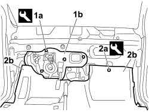
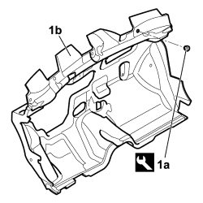

7095E20 SOUNDPROOFING PANEL ON PASSENGER COMPARTMENT FRONT BULKHEAD - R.R WITH HEATER OR AIR CONDITIONING UNIT REMOVED
- Path
- Procedures > 70 FITTINGS > 7095 BODYWORK MISCELLANEOUS > 7095E VARIOUS BODY INSULATION ELEMENTS > 7095E20 SOUNDPROOFING PANEL ON PASSENGER COMPARTMENT FRONT BULKHEAD - R.R WITH HEATER OR AIR CONDITIONING UNIT REMOVED
- Kind
- repair procedure (removal / refitting; the operation number is the code)
- Applies to
- all engines; all production periods
- Interactive page
- https://sloeber94.github.io/elrnDB-fCrm/en/#/194001206
Applies to: all engines; all production periods
 Removing
Removing
 Refitting
Refitting1. Using the special tool, release the retaining buttons (1a) for the support (1b).
2. Using the special tool, release the buttong (2a) retaining the carpet (2b) to the floor and fold over the front edges to free up the work area.
Tool | Description | Function | Validity |
|---|---|---|---|
1878077000 | Knife | Retainer removal |

Applies to: all engines; all production periods
1. Using the special tool, release the buttons (1a) retaining the sound insulation panel (1b) on the passenger compartment front bulkhead.
Tool | Description | Function | Validity |
|---|---|---|---|
1878077000 | Knife | Retainer removal |

Applies to: all engines; all production periods
Refitting
Removing- Place the sound insulation panel (1b) on the passenger compartment front bulkhead and fit the retaining buttons.
- Position the front edges of the carpet and fit the retaining button.
- Position the suport and fit the retaining buttons.